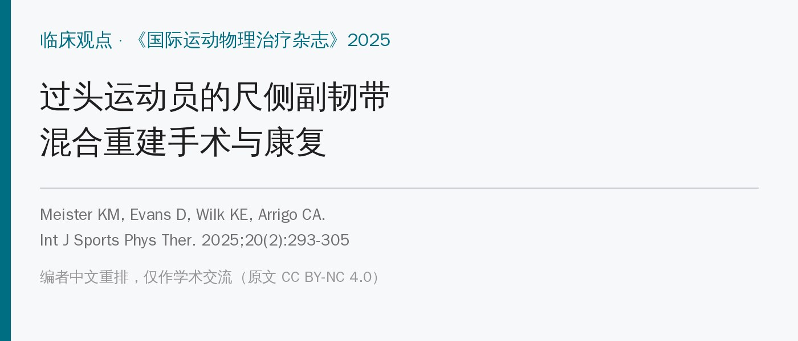
🔖原文信息（编者中文重排）
📚 文献信息
▪ Meister KM, Evans D, Wilk KE, Arrigo CA. Ulnar Collateral Ligament Hybrid Reconstruction Surgery & Rehabilitation in the Overhead Athlete. Int J Sports Phys Ther. 2025;20(2):293-305. doi:10.26603/001c.128512
▪ 作者：骨科医生 Keith Meister（TMI 运动医学，长期担任职业棒球队医），物理治疗师 Daniel Evans（德州游骑兵队康复顾问）、Kevin Wilk、Christopher Arrigo
▪ 文章类型：临床观点 / 技术介绍，证据等级 5 级；没有疗效数据
尺侧副韧带（UCL）损伤在过头投掷运动员、尤其是棒球投手中越来越多。2011～2023 年，肘关节损伤是美国职业棒球大联盟（MLB）报告最多的损伤；约 26% 的大联盟投手、19% 的小联盟投手做过 UCL 手术。投球速度、疲劳和过度使用、肩活动度丢失、全年投球都是推手。
传统 UCL 重建（自体肌腱移植）后约 83% 能回到原水平或更高；近年也有研究报告重建 98%、内支架修复 99% 的成功率。但翻修手术越来越多，效果却差得多：翻修后只有 47%～78% 能回到伤前水平。
Meister 医生从 2008 年开始用一种“混合”重建：自体肌腱移植（掌长肌或股薄肌）+ 内支架（Internal Brace，胶原涂层高强度缝合带）加强，至今已做了 400 多例。内支架修复和传统重建的康复方案都有文章介绍，但混合重建后的康复还没人系统写过，这篇就是把手术和康复一起讲清楚。
下面按原文顺序把 21 张术中照片串起来，治疗师了解这些细节，才能明白康复里每个“保护”和“禁忌”的来由。
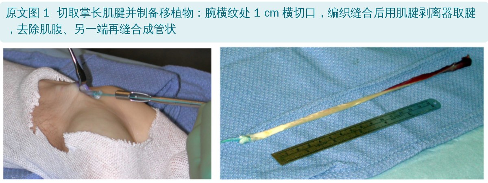
🔖原文图 1：切取掌长肌腱并制备移植物
• 腕横纹处做 1 cm 横切口，找到掌长肌腱，用 2-0 可吸收线做“棒球缝合”编织后在远端切断，再用肌腱剥离器从前臂取出
• 去掉肌腹，另一端再用 2-0 可吸收线缝成管状，放在器械台备用
• 需要股薄肌腱时，作者习惯取对侧下肢
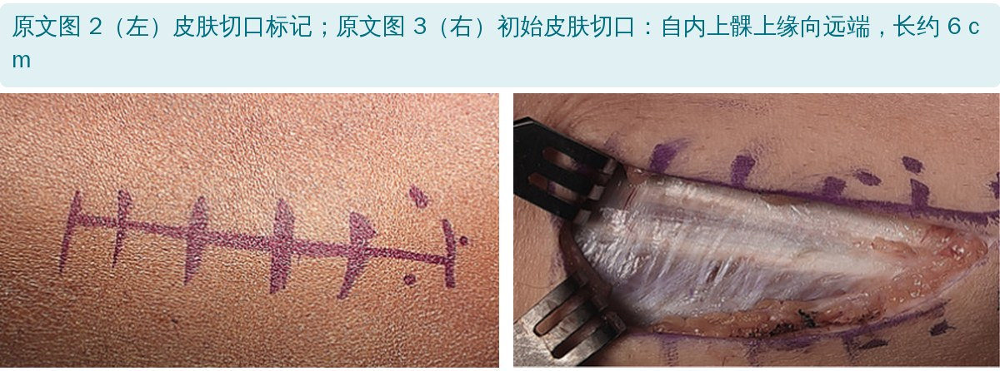
🔖原文图 2、图 3：切口标记和切开
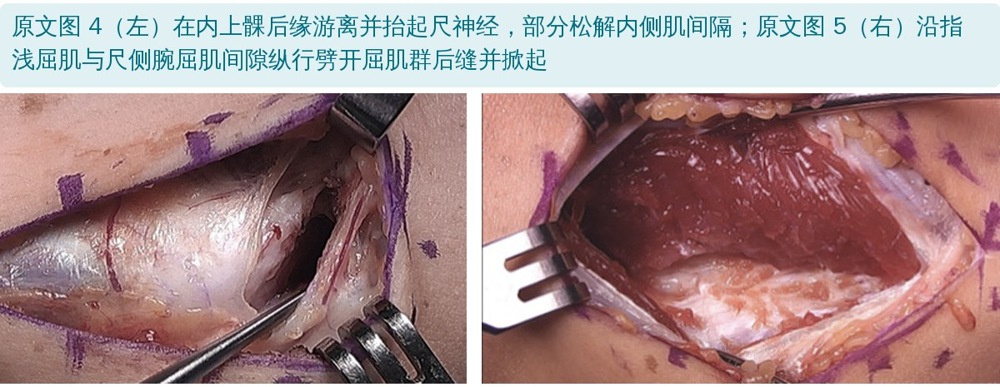
🔖原文图 4、图 5：游离尺神经、劈开屈肌群
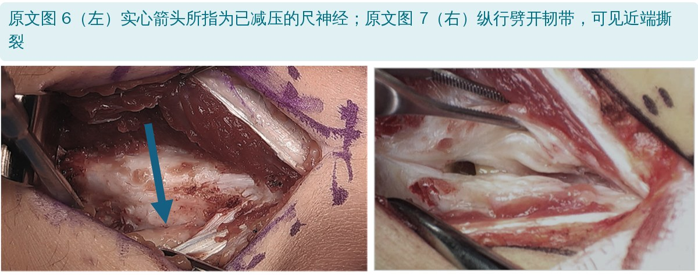
🔖原文图 6、图 7：尺神经减压、劈开韧带
• 切口从内上髁上缘向远端，约 6 cm；保护皮神经分支
• 在内上髁近端把尺神经抬起，便于做骨道；常部分松解内侧肌间隔，同时给神经减压
• 沿指浅屈肌与尺侧腕屈肌之间纵行劈开屈肌群后缝，保留尺侧腕屈肌前方筋膜以保护肌肉和尺神经
• 暴露 UCL 前束后，切开尺侧腕屈肌表面筋膜直到尺骨近端凹陷处，对尺神经做原位减压
• 从高耸结节开始向近端纵行劈开韧带直到内上髁止点，探查有无急性损伤；近端或远端有明确撕裂可另外缝合
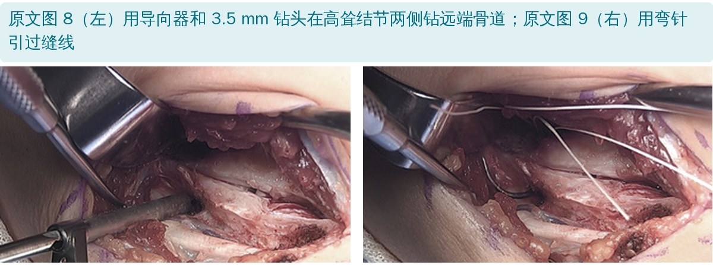
🔖原文图 8、图 9：钻远端骨道、引线
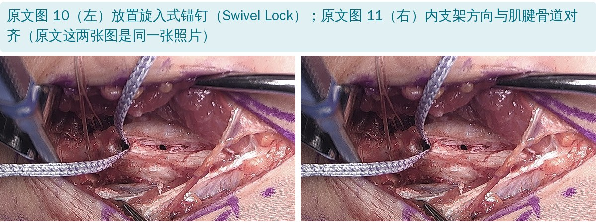
🔖原文图 10、图 11：锚钉和内支架
• 在尺骨近端前缘开一个小筋膜窗，在高耸结节凹陷两侧钻两条汇聚的 3.5 mm 骨道，用弯刮匙打通，再用弯针引过双股缝线
• 在高耸结节顶点、关节线远端 4～5 mm（位于骨道近侧）钻 2.7 mm 孔，攻丝后拧入载有胶原涂层缝合带的 3.5 mm 旋入式锚钉——这就是内支架的远端固定点
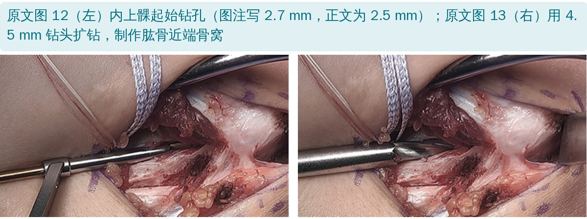
🔖原文图 12、图 13：内上髁起始钻孔和扩钻
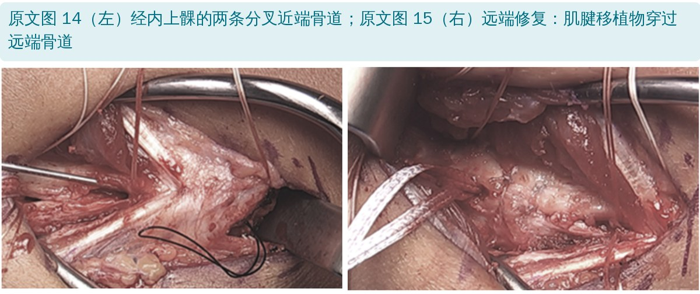
🔖原文图 14、图 15：近端分叉骨道、肌腱穿过远端骨道
• 在内上髁基底、骨道尽量偏外，先用 2.5 mm 钻头钻起始孔，再用 4.0 或 4.5 mm 钻头扩钻到 15～17 mm 深，做成骨窝
• 再用 2.5 mm 钻头从骨窝向内上髁近端皮质钻两条分叉的小骨道，用 Hewson 过线器引过缝线
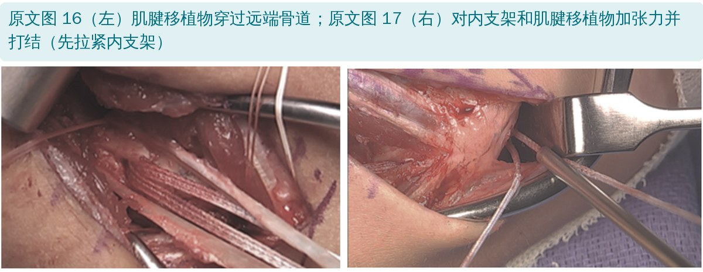
🔖原文图 16、图 17：穿移植物、加张力打结
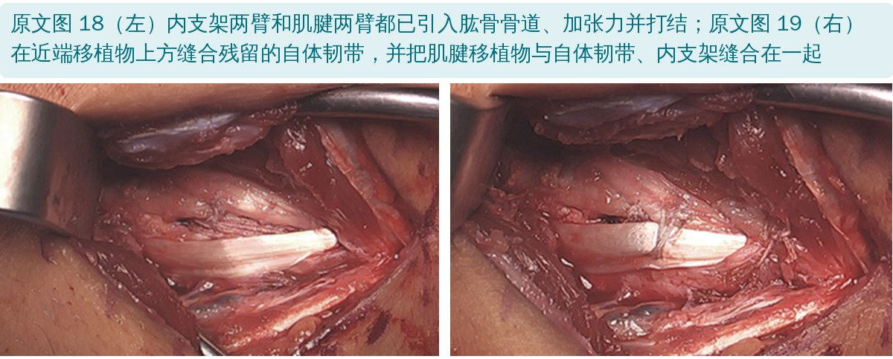
🔖原文图 18、图 19：近端固定和缝合残留韧带
• 肘关节完全旋后、屈曲 30°，如有远端止点撕裂先修复
• 肌腱移植物穿过远端骨道；一臂和内支架的一臂一起用 #2 缝线棒球缝合后引入肱骨骨窝，另一臂裁到合适长度后同样引入
• 先拉紧并打结内支架（打 5 个结），再拉紧肌腱——先由内支架“预设”关节张力，肌腱随后
• 因为近端骨道偏外，会留下一圈自体韧带，可以 8 字缝合盖在移植物 / 内支架上方；更远端用 2-0 编织线把肌腱两臂、自体韧带和内支架缝在一起
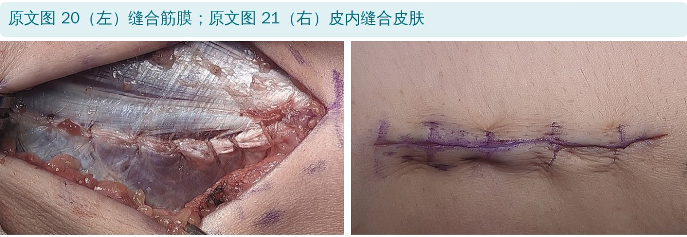
🔖原文图 20、图 21：缝合筋膜和皮肤
• 冲洗后连续缝合屈肌群后缝，皮下和皮内两层缝合皮肤，局部浸润麻醉
• 术后戴铰链式肘支具，锁定在屈肘 90°、前臂中立位
原文还附有一段手术视频（YouTube），以及表 1 手术步骤总表；表 1 的内容已融入上面的步骤中，全文翻译见附录。
原则：循序渐进、按标准进阶，每一期都有目标、练习和进入下一期的条件；强调运动员、家属、医生、运动防护师和物理治疗师的团队配合，和医生保持密切沟通。不按时间表来，容易出现肘关节僵硬、移植物松弛甚至失败。
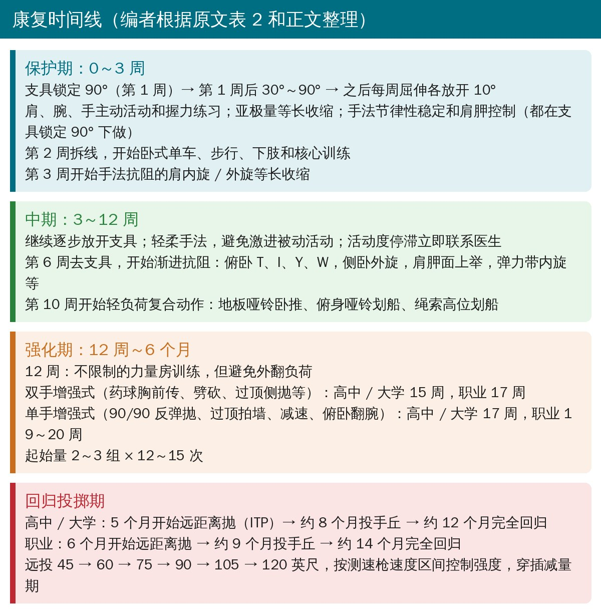
🔖康复时间线（编者根据原文表 2 和正文整理）
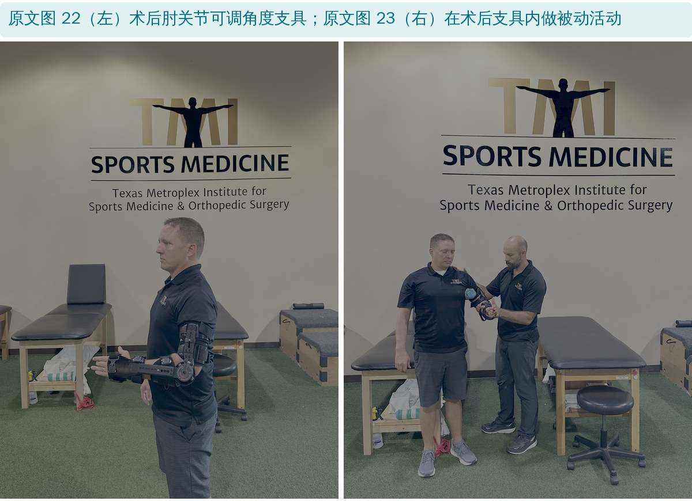
🔖原文图 22、图 23：术后支具和支具内被动活动
• 支具锁定在屈肘 90°，保护移植物和切口；第 1 周后放开到 30°～90°，第 2 周末以后每周屈、伸各再放开 10°（见下表）
• 肩、腕、手主动活动和握力练习；肩屈伸、腕手的亚极量等长收缩，减少肌萎缩、促进血液循环
• 可以加手法抗阻的节律性稳定练习和肩胛神经肌肉控制练习，但都要在支具锁定 90° 下做，避免对肘关节产生有害的外翻力
• 第 2 周拆线，开始卧式单车、步行；下肢力量（负重背心、腿举、单腿蹲、蚌式、臀桥、髋部推举等不用上肢的动作）和核心稳定训练
• 不要过度加压、牵拉或激进手法去抢活动度，否则可能引起肘关节炎症和 / 或尺神经刺激；活动度丢失或停滞要通知医生，及时调整支具或用抗炎药
| 术后时间 | 支具角度 |
|---|---|
| 0～7 天 | 锁定在 90° |
| 7～14 天 | 30°～90° |
| 14～21 天 | 20°～100° |
| 21～28 天 | 10°～110° |
| 28～35 天 | 0°～120° |
原文表 3：功能性肘支具角度设置（中文翻译）
• 可以加抗肩内旋 / 外旋的节律性稳定练习，开始给移植物施加外翻负荷；由治疗师小心执行，阻力无痛、亚极量
• 继续轻柔手法帮助恢复肘活动度，仍要避免激进的被动活动
• 第 6 周去支具，此时肘应接近全范围；之后 1～2 周还会继续小幅改善。混合重建的屈肘恢复往往比单纯肌腱重建慢，不要强行追求全屈
• 开始每周进阶的渐进抗阻：俯卧水平外展（T）、俯卧后伸（I）、俯卧 105° 外展加外旋（Y）、俯卧划船加外旋（W）、侧卧外旋、站立肩胛面上举和外展、弹力带肩内旋
• 下肢力量训练基本不限制，但仍要避免任何对肘产生过大外翻负荷的动作
• 第 10 周开始轻负荷上肢复合动作：地板哑铃卧推、俯身哑铃划船、绳索高位划船，同时继续肩袖和肩胛稳定肌训练
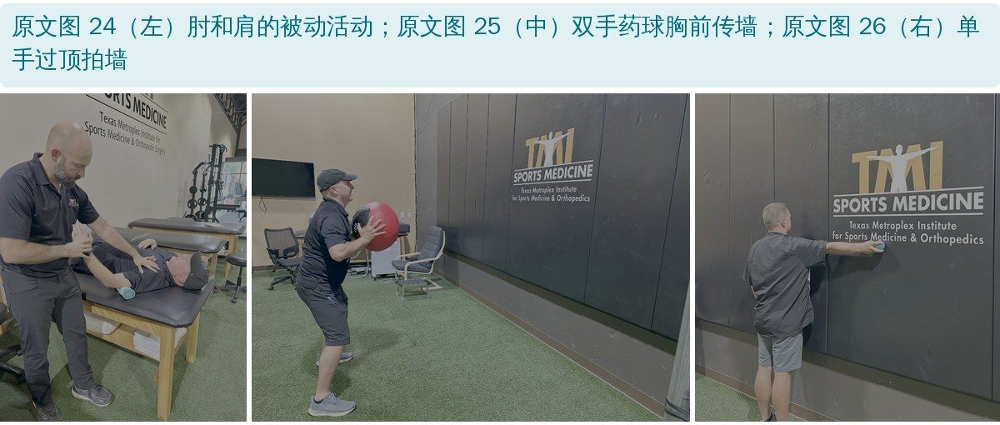
🔖原文图 24～26：被动活动和增强式训练
• 进入条件：肘关节全范围无痛，之前所有等张练习都不痛
• 12 周起可以不限制地进力量房，但要避免外翻负荷大的动作，最好和熟悉过头运动员的体能教练或治疗师一起安排
• 双手药球增强式：胸前传、劈砍传、过顶侧向抛、单侧推抛、双手胸前传墙；高中 / 大学 15 周开始，职业 17 周开始
• 单手增强式：90/90 反弹网抛、过顶拍墙、肩减速练习、俯卧翻腕抛加重球；高中 / 大学 17 周开始，职业 19～20 周开始
• 起始量 2～3 组 × 12～15 次，逐步增加量、强度和复杂度，向投掷需求靠拢
• 开始间歇投掷计划（ITP）的条件：前面各期都没有问题和反复，肩、肘全范围无痛、肌力完全恢复，双上肢临床检查满意，医生同意
• 时间：高中 / 大学 5 个月、职业 6 个月开始；职业投手因球速、转速、投球量更高而延后
• 作者认为按速度控制的投掷进阶并发症和反复最少：远投从 45 英尺开始，依次到 60、75、90、105、120 英尺，按下表的测速枪区间从低限逐步升到高限，并穿插减量期
• 持续发紧或酸痛就多休息；一周内不缓解，要联系医生
• 远投阶段一般约 3 个月；之后上投手丘：先半程、再全程，先直球，再逐步加变速球、滑球等；完成后先打活体打者练习至少 2 周，再进行康复赛
• 整个 ITP 约 6～8 个月；高中 / 大学约 12 个月、职业约 14 个月完全回归
| 距离 | 平均速度 | 区间（从低限开始，逐步升到高限） |
|---|---|---|
| 60 英尺 | 62 mph | 59～64 mph |
| 75 英尺 | 67 mph | 64～69 mph |
| 90 英尺 | 73 mph | 70～75 mph |
| 105 英尺 | 77 mph | 75～80 mph |
| 120 英尺 | 84 mph | 81～86 mph |
原文表 4a：平均直球球速 90～95 mph 投手的测速枪速度区间（中文翻译）
| 距离 | 平均速度 | 区间（从低限开始，逐步升到高限） |
|---|---|---|
| 60 英尺 | 57 mph | 55～60 mph |
| 75 英尺 | 63 mph | 61～66 mph |
| 90 英尺 | 69 mph | 67～72 mph |
| 105 英尺 | 74 mph | 72～77 mph |
| 120 英尺 | 79 mph | 78～81 mph |
原文表 4b：平均直球球速 85～90 mph 投手的测速枪速度区间（中文翻译）
| 距离 | 平均速度 | 区间（从低限开始，逐步升到高限） |
|---|---|---|
| 60 英尺 | 56 mph | 52～60 mph |
| 75 英尺 | 62 mph | 60～64 mph |
| 90 英尺 | 67 mph | 65～69 mph |
| 105 英尺 | 73 mph | 70～75 mph |
| 120 英尺 | 76 mph | 75～77 mph |
原文表 4c：平均直球球速 80～85 mph 投手的测速枪速度区间（中文翻译）
1 英尺 ≈ 0.305 米；1 mph ≈ 1.61 km/h。完整的 ITP 方案在原文附录 A（Word 文件），PDF 中没有收录。
• 这是技术介绍，不是研究：证据等级 5 级。文中说“400 多例成功手术”“已证明能增强稳定性、促进恢复”，但没有给出任何回归率、翻修率、并发症或随访数据
• 作者经验很丰富：主刀医生和治疗师都长期服务职业棒球，方案细节具体、可操作，作为临床参考价值高
• 时间表偏保守：混合重建有内支架加强，理论上可以更快，但作者仍给了 12～14 个月的回归时间，和传统重建接近；是否需要这么久，还缺对比数据
• “速度控制的投掷进阶并发症最少”只是作者经验，没有数据支持
• 图 10 和图 11 是同一张照片：标为“放置锚钉”和“内支架方向与骨道对齐”的两张图，像素几乎完全一样，只有压缩噪点差别
• 钻孔尺寸对不上：图 12 说“内上髁起始钻孔 2.7 mm”，正文和表 1 都说内上髁起始孔用 2.5 mm；2.7 mm 是尺骨高耸结节锚钉孔的尺寸
• 表 1 把尺骨侧写成“近端骨道”：表 1 中“Proximal Tunnel：在高耸结节顶点钻 2.7 mm 孔”，高耸结节在尺骨，这是远端锚钉孔
• 远端骨道的打通工具前后不一：正文说用弯刮匙打通，表 1 说用弯针
• 职业运动员单手增强式的时间：表 2 写 19 周，正文写 20 周；正文又说双手增强式成功 3～4 周后再加单手，但时间表里只隔 2～3 周
• 去支具时间：正文说第 6 周末去支具，另一处又写“6～8 周可去支具”
• 摘要和正文说法不同：摘要说 2011～2023 年 MLB 最常见的是“UCL 损伤”，正文说的是“肘关节损伤”
• 表 4 的速度梯度不一致：表 4a 和 4b 各距离平均相差约 5 mph，但 4b 和 4c 在 60 英尺只差 1 mph（57 对 56）、105 英尺也只差 1 mph（74 对 73），120 英尺又差 3 mph
• 许可证名称自相矛盾：写成“Creative Commons Attribution 4.0 International License（CCBY-NC-4.0）”，链接指向的是 CC BY-NC 4.0
• 参考文献小错：文献 9 标为《美国运动医学杂志》，但 DOI 属于《骨科运动医学杂志》会议摘要增刊；文献 15 页码“253-26”不完整；文献 14 “IInjury”
• 小错：“competion”“post-operatve”“caretaken”；“reading it for full return”应为 readying；表 1 “The ulnar nerve is identified along it’s on the proximal ulna”句子残缺
• 支具角度照表走：第 1 周锁 90°，之后每周屈伸各放 10°，第 5 周 0°～120°，第 6 周去支具
• 前 6 周别抢活动度：不做激进被动牵伸和手法；尺神经术中做过减压，过度刺激容易引发炎症和神经症状；屈肘恢复慢是正常的
• 早期就动全身：第 2 周拆线后，下肢、核心、心肺都可以练，上肢做等长和节律性稳定（支具锁 90° 下）
• 第 3 周起才开始给移植物外翻负荷：从手法抗阻的肩内外旋等长 / 节律性稳定开始，无痛、亚极量
• 第 6 周后的 T、I、Y、W、侧卧外旋，是投手肩胛和肩袖训练的基本盘
• 增强式和投掷按级别分时间：高中 / 大学比职业早 2 周～1 个月；投掷用测速枪控制强度，比只看距离更可控
• 出现持续肘内侧痛、尺神经症状、活动度停滞，立即和手术医生沟通
| 手术阶段 | 步骤说明 |
|---|---|
| 术前准备 | 按标准方式对患肢消毒铺巾，保持无菌区域 |
| 切取移植物 | 掌长肌腱切取： 1. 切口和分离：在腕横纹处做 1 cm 横切口，找到并分离掌长肌腱 2. 编织缝合：用 2-0 可吸收线以棒球缝合法编织肌腱，然后在远端切断 3. 取腱：用肌腱剥离器从前臂取出掌长肌腱，适当关闭伤口 4. 制备移植物：去除肌腹，另一端用第二根 2-0 可吸收线缝成管状，放在器械台备用 *需要股薄肌腱时，资深作者倾向于从对侧下肢切取 |
| 手术入路 | 1. 切口：从内上髁上缘开始向远端延伸约 6 cm 2. 保护神经：保护皮神经分支，在内上髁近端抬起尺神经以便做骨道；也可部分松解内侧肌间隔 3. 暴露 UCL：劈开屈肌群后方筋膜，保留尺侧腕屈肌前方筋膜以保护肌肉和尺神经 4. 暴露韧带：暴露内侧 UCL 前束。沿尺骨近端找到尺神经（原文此句不完整），在此开小筋膜窗以放置尺骨骨道 |
| 制作骨道 | 1. 钻孔：在高耸结节凹陷两侧钻两条汇聚的 3.5 mm 骨道，用弯针打通，并引过双股 2-0 可吸收线 2. 近端骨道（原文如此，实为尺骨侧）：在高耸结节顶点、关节线远端约 4～5 mm、尺骨骨道近侧钻 2.7 mm 孔，攻丝后拧入载有胶原涂层缝合带的 3.5 mm 旋入式锚钉 3. 内上髁骨道：用 2.5 mm 钻头钻近端骨道的起始孔，再扩钻到 4～4.5 mm，深约 15～17 mm；再经内上髁近端皮质钻两条 2.5 mm 分叉骨道 |
| 放置移植物和内支架 | 1. 固定移植物：肌腱移植物穿过远端骨道。移植物一臂和内支架一臂一起用 #2 缝线棒球缝合后引入骨窝；移植物另一臂裁到合适长度，用第二根 #2 缝线固定 2. 加张力：先拉紧并打结内支架缝线，保证关节张力合适；打 5 个结后，再拉紧并打结肌腱移植物缝线 |
| 最后步骤 | 1. 覆盖自体韧带：近端骨道偏外，在移植物 / 内支架上方保留一圈自体韧带，用 2-0 可吸收线 8 字缝合 2. 加强缝合：用 2-0 编织线把肌腱两臂、自体韧带和内支架缝在一起 3. 关闭伤口：彻底冲洗，连续缝合屈肌筋膜劈开处，皮肤两层缝合；包扎并局部浸润麻醉 |
| 术后处理 | 上臂戴术后铰链式肘支具，锁定在屈肘 90°、前臂中立位；包扎完成后唤醒患者、松止血带 |
原文表 1：手术技术概览（中文翻译）
| 阶段 | 时间 | 要点 |
|---|---|---|
| 保护期 | 0～3 周 | • 保护愈合组织，让肘活动度逐步恢复 • 减轻术后炎症和肿胀 • 第 1 周支具锁定 90°，术后 1 周放开到 30°～90° • 之后每周屈、伸各放开 10°（见支具设置表） • 术后 2 周拆线 • 拆线后开始心肺训练和下肢练习 • 3 周开始手法抗阻的肩内旋、外旋等长收缩 • 继续保护性的肩胛、手和前臂练习，促进循环、逐步恢复活动度 |
| 中期 | 3～12 周 | • 继续逐步放开支具，逐步恢复肘活动度；避免过度激进的手法 • 肘活动度恢复停滞或丢失时联系医生 • 继续保护性等长、肩胛、前臂和手部练习，防止肌萎缩 • 术后 6 周去支具，开始肩胛、肩袖、肘、前臂和腕的渐进抗阻训练 • 术后 10 周加入轻负荷复合动作，为不限制的力量房训练做准备 |
| 强化期 | 术后 12 周 | • 术后 12 周开始不限制的力量房训练，注意肘外翻防护；在可耐受范围内进阶，为增强式训练做准备 • 大学 / 高中：术后 15 周开始双手增强式，17 周进阶到单手增强式 • 职业运动员：术后 17 周开始双手增强式，19 周进阶到单手增强式 |
| 回归运动期 | 5～6 个月以后 | 大学 / 高中： • 术后 5 个月：开始远投 ITP • 约 8 个月：开始投手丘进阶 • 约 12 个月：完全回归运动 职业运动员： • 术后 6 个月：开始远投 ITP • 约 9 个月：开始投手丘进阶 • 约 14 个月：完全回归运动 |
原文表 2：康复概要（中文翻译）
欢迎关注骨科康复小黄公众号，获取更多物理治疗的专业知识！
📄参考文献：
Meister KM, Evans D, Wilk KE, Arrigo CA. Ulnar Collateral Ligament Hybrid Reconstruction Surgery & Rehabilitation in the Overhead Athlete. Int J Sports Phys Ther. 2025;20(2):293-305. doi:10.26603/001c.128512
原文以 CC BY-NC 4.0（署名—非商业性使用）许可发表，仅限非商业用途。本文为非商业的学术交流解读：原文图 1～26 原样引用并加中文图注，表 1～4 为中文翻译，康复时间线卡为编者根据原文整理。如有侵权请联系删除。